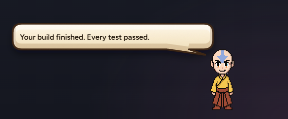
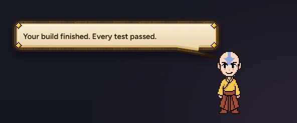
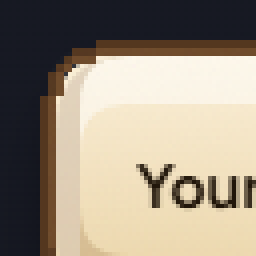
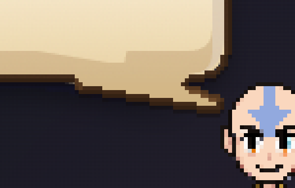
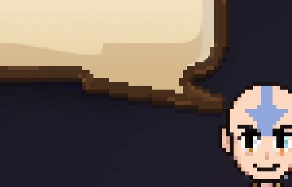
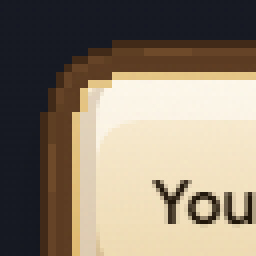
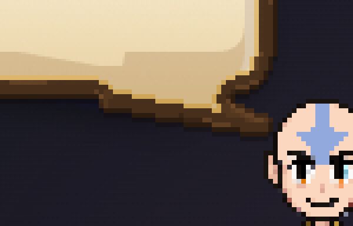

TODAY'S A

Calmer this time. B stays as it is, the studs are gone, and only the edge changes. No corners, no studs, no gems.
WHAT TO PICK S1, S2 (my pick) or S3. Or "keep today's B, just lose the studs".


The thin dark ink edge becomes a 2-pixel wood line. Nothing else.


A slim band of Samara's own wood, with real grain, round the bubble and the tail.

S2, plus the faintest gold hairline just inside the wood.

